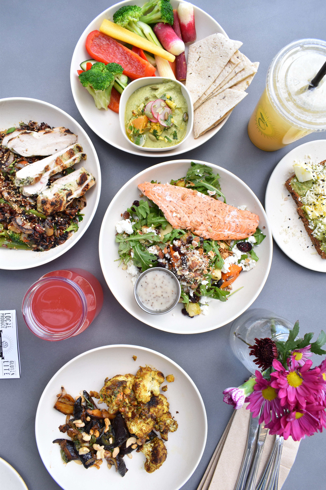
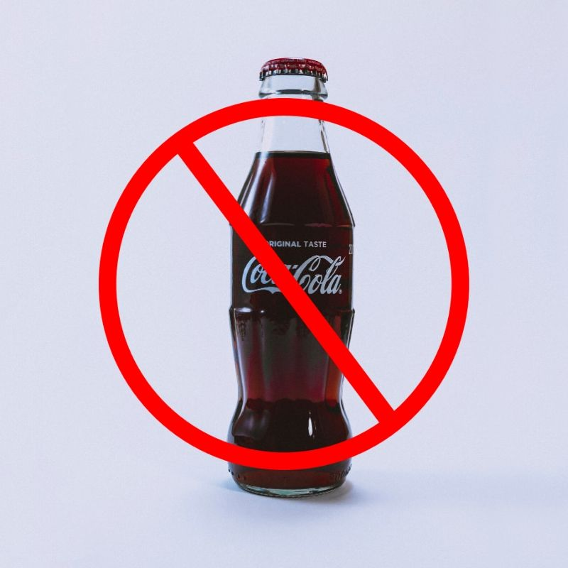

8 New Rules of Lean Eating
You'd like your eating plan to work for you - to get you the results that you want without loads of complicated steps. The good news is that lean eating does not mean complicated eating...it just means eating smart!
1. Eat the RIGHT Type of Carbs

There is a confusion around which carbs have a place in a lean diet and which carbs will only make you gain weight.
The success of your eating plan depends a lot on which of these carbs you regularly include in your diet:
- Green vegetables
- Non-Green veggies - You gotta get your carrots in too!
- Fruit
- Whole Grains and Starches
- Refined Grains
- Foods with Added Sugar
2. Track What You Eat
The only way to improve upon your diet is to actually know what you're currently eating. Keep a food journal, or download a free food tracker app(my fitness pal),
and track the calories that you have over the course of a week. This will give you a broad look at where your low quality calories are coming from (high sugar, empty calories).
Your first step will be to eliminate these fattening calories and to start replacing empty calories with nutrient-filled whole foods.
3. Space Meals Apart
Much has been said over the past number of decades about the importance of eating small frequent meals throughout the day. This is old, outdated science. New research has proven that there's more harm than good to eating more frequently than every 4 hours. Stick with 3 meals each day, and fill in a protein-based snack if your meals are going to be more than 4 hours apart.
4. Never Restrict Calories to the Extreme

There's a certain trend going on in temporarily restricting calories to the extreme. The idea that one can drop a down a size or two in just as many weeks is quite tempting.
I hate to be the one to burst your overambitious bubble, but extreme calorie restriction NEVER WORKS. It's terrible for your body and it is not something that is sustainable
(namely because you'd starve to death) all this will do is make your body completely fall off and binge.
The key to being lean for life is to eat in a way that you can sustain forever. Eat whole foods. Eat a moderate amount of the RIGHT calories. Every day, ongoing, forever.
The key to being lean for life is to eat in a way that you can sustain forever. Eat whole foods. Eat a moderate amount of the RIGHT calories. Every day, ongoing, forever.
5. Eat Veggies First

This may go against all of your instincts, but hear this one out. When you sit down to a meal first eat all of the veggies and salad, before moving on to the main meal.
This simple strategy helps to fill you up with lower calorie foods first, before moving on to the higher calorie items. By making this a habit you'll naturally and effortlessly consume fewer
calories at each meal, which will add up in a big way.
6. Include Protein at Every Meal

Each of your meals should be built around a healthy serving of protein. This protein could be meat (chicken breast, fish fillet, roasted turkey, lean beef etc..), or a meat substitute
(tofu, quorn, jackfruit, etc..) eggs, or protein powder. Having protein as the focus point of your meal is important for two reasons:
- You're fueling up in a way that builds muscles rather than stores fat
- By default, you're avoiding high calorie main dishes, which is what really causes most weight gain
7. Ban Liquid Calories

Liquid calories have no place in a lean eating plan. No place at all. Anytime that you are drinking calories, it's safe to assume that you're adding inches to your waistline.
Put down the beer, just say no to the blended coffee drink, and forget about fizzy drinks. Put down the beer, just say no to the blended coffee drink, and forget about fizzy drinks.
8. Avoid Prepackaged Foods
Prepackaged foods and snacks have no place in a lean eating plan. These processed foods contain numerous fattening ingredients such as refined sugar, sodium,
grains, fillers and other artificial ingredients. If you are currently eating packaged foods on a daily basis, then cutting these items out will quickly translate into pounds lost.